Magnolias

SAFARI
Users
History & General Information
Bamboo is the fastest growing plant on Earth. It can grow well over three feet per day and has been clocked at over three feet per hour in short spurts. Most are much smaller but some giant timber bamboo can grow to over 100 feet tall.
Bamboo stems are hard flexible and durable, so they have been made into tools and utensils and used as building materials since long before the dawn of history. Their utility has been both enhanced and limited by their hollow jointed nature and thin walls, but modern processes and bonding methods have recently made bamboo practical for durable flooring, cutting boards and other non-traditional uses.
Bamboo propagates by sending out underground runners which send up shoots that develop into mature grass stems. These tender young shoots are the only part of the bamboo plant that can be made edible to humans. "Spreading" bamboos can become pests, as their runners are long and they send them out aggressively. "Clumping" bamboos are fairly easy to control as their runners are very short and not so aggressive.
Pandas and golden lemurs have evolved ways to process cyanide and can ingest enough bamboo to kill several men each day, but even young shoots are too toxic for human consumption. Shoots must first have the fibrous exterior sheaths stripped off and must then be cooked well in boiling water, uncovered to let the bitter cyanide escape.
Varieties
Of the hundreds of varieties of bamboo, only a few are used for food and fewer are available commercially. The obvious difference is size, but there are other differences. Once peeled and detoxified shoots may be sold fresh in bags or in sterile vacuum packs for longer keeping, or can be canned whole, sliced or shredded. Bamboo may also be dried, dried and salted, pickled, or frozen.
Bamboo Shoots & Tips
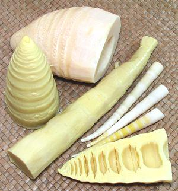 With no other descriptor, bamboo shoots tend to be slightly yellow in color and 2 to 3 inches in diameter, similar to the ones in the center left and bottom right of the photo. If canned they, will usually be sliced in some fashion, generally into either lengthwise slices or small slivers.
Canned are still the most commonly available but markets serving
Asian communities now stock various kinds in sterile vacuum bags.
The vacuum bags have the advantage that you can see exactly what you're
getting, whole shoots can be bagged, and the flavor is much fresher than
canned. Canned bamboo shoots should be briefly par boiled to remove the
tinny taste.
Fresh Bamboo Shoots
[probably Phyllostachys edulis]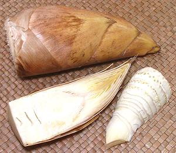 [probably Phyllostachys edulis]
Unprocessed bamboo shoots are now often available in Southern California.
While more trouble to prepare, the flavor of fresh bamboo is superior to
vacuum bagged and a lot superior to canned. The photo specimens are a
little old. Preferably they should be no darker than the photo specimens.
From the shape and structure of the edible shoot, I identify this as
P. edulis. The photo specimen at the top was 8 inches long,
3-1/4 inches diameter at the base (average, they are always oval) and
weighed 1 [pimd 5-7/8 ounces. For preparation see
Details and Cooking
Prepared Bamboo Shoots, Bulk
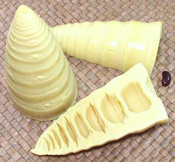 [Mang Xoay (Viet); probably Bambusa oldhamii (giant timber bamboo) or Bambusa odashimae (very similar)]
These are now available in many markets serving East Asian populations, sold bulk out of water filled tubs or loosely bagged. Larger stores may have them whole, sliced and slivered. They have only been peeled and boiled long enough to detoxify them - basically the same as if you prepared your own fresh bamboo shoots. They are prepared and boiled in Asia, then shipped to North America in sterile bulk packaging.
Flavor is very good but they are perishable - refrigerate and use
within a few days of purchase. If you have to keep them longer, boil
them for a few minutes and seal in a plastic bag while still hot. The
whole photo specimen was 5-1/4 inches long, 2-1/2 inches diameter and
weighed 8-3/8 ounces. Many in the tub it was drawn from were quite a bit
larger. They were purchased from a large Asian market in Los Angeles
(San Gabriel) for 2017 US $1.39 / pound.
Winter Bamboo
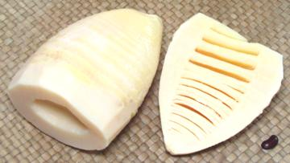 [Moso Bamboo; Phyllostachys edulis]
These are from a giant bamboo that grows to nearly 100 feet tall. They are harvested in the winter when they are smaller, but sweeter and more tender than the "Hairy" spring shoots, which are used mostly for drying. They are a very white color and very large in size. Otherwise they're pretty much like other bamboo shoots. Today they are generally sold whole in sterile vacuum bags.
The largest of the photo specimens was
5 inches long, 3-1/2 inch diameter at the base (average, they are oval),
and weighed 1 pound 3-3/4 ounces. The photo specimens were purchased
in individual vacuum bags from a large Asian market in Los Angeles
(San Gabriel) for 2017 US $1.99 each (about $1.61 / pound).
Green Bamboo Shoots
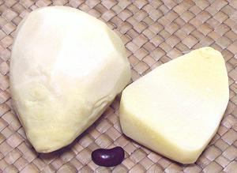 [possibly Phyllostachys atrovaginata or P. virella]
These shoots are white, but from a variety of bamboo called "Green
Bamboo". I always keep these bamboo shoots on hand, because the shrink
packages contain only about 10.5 ounces, enough for most recipes, but
not too much, and they are tender, non-fibrous and with good flavor.
They are often solid, as in the split photo specimen to the right, so
can be easily cut into whatever shape you want. They are, however, sold
at a premium price. The whole one to the left was 2-3/4 inches high and
2-1/4 inches wide, weighing 4-1/4 ounce, nearly as large as they get.
They were purchased from a large Asian market in Los Angeles (San
Gabriel) for 2017 US $3.95 / pound.
Thin Bamboo Shoots
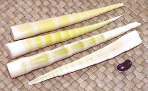 [possibly Fargesia spathacea or Phyllostachys bambusoides]
These bamboo shoots are long and very slender, though if from P.
bambusoides the mature plant is quite large, to 72 feet tall.
These shoots may be in vacuum packs or canned. The shoots are a bit more
fibrous than the larger shoots and have a more distinct and slightly
bitter flavor. The photo specimens were around 6 inches long, 5/8 inch
diameter and weighed 5/8 ounce each. They were purchased in a 7 ounce
package from a large Asian market in Los Angeles (Alhambra) for 2017
US $2.72 per pound.
Bamboo Tips, Bulk
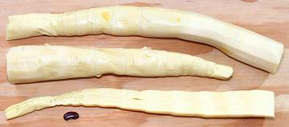 [Mang Cay (Viet); probably Bambusa oldhamii (giant timber bamboo) or Bambusa odashimae (very similar)]
These are from the growing tips of more mature stems, similarly to palm hearts. They are very edible with good bamboo shoot flavor, and firm but not hard texture from end to end. These may be almost solid, like the cut specimen, or may have fairly large cavities.
Tips are available only from the bulk tubs, because of their size.
The largest photo specimen was 13 inches long, 1-1/2 inches diameter and
weighed 10 ounces, but many in the tub it was drawn from were quite a bit
larger. They were purchased from a large Asian market in Los Angeles
(San Gabriel) for 2017 US $1.39 per pound.
Dried Bamboo, Salted
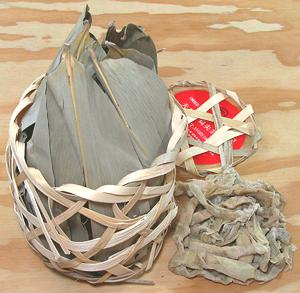 [possibly Fargesia spathacea or Phyllostachys bambusoides]
This traditional product was packaged in the traditional manner, in a bamboo splint basket lined with dried bamboo leaves. Of course, this is the 21st century, so the product inside was in a plastic vacuum pack bag. Most exporters dispense with the traditional packing and just ship them in standard modern vacuum packages, but this drying method has been pretty much superseded by the Unsalted Dried Bamboo form (see below).
This product is made from Thin Bamboo Shoots
dried and preserved with salt. They need to be soaked in a couple
changes of water before use. The photo specimen was purchased from a
large Asian market in Los Angeles (Alhambra) for 2017 US $9.99 for the
package, containing 2 pounds 3 ounces of the product ($4.56 per pound).
Ing: Bamboo shoots, salt, sodium dehydroacetate.
Details and Cooking.
Dried Bamboo, Unsalted
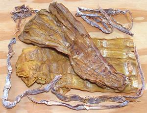 [probably Moso Bamboo; Phyllostachys edulis (large) and Fargesia spathacea or Phyllostachys bambusoides (thin)]
Most dried bamboo in the markets here in Los Angeles are of this form,
whether wide, thin or sliced. They are always treated with sulphur
dioxide or another sulfite to preserve and maintain color, as is most
dried fruit sold in North America. Some of these products, especially
from China are an almost garish yellow in color. Of the photo specimens,
the large were from Vietnam and the small from China. The largest wide
piece was 11 inches long and weighed 3 ounces.
Details and Cooking
Smoke Dried Bamboo Shoots
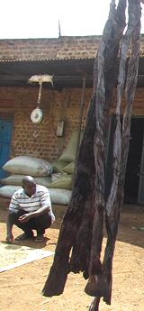 [Malewa (Uganda)]
In eastern Uganda, near the mountains, there are bamboo forests. In that
region bamboo shoots have long been sliced and smoke dried similarly to
fish. They were originally used directly for food, but now are mainly
cooked into a sauce with sesame seeds or peanuts. The photo specimens
were about 20 inches long. The strips are boiled to clean them. The
joints are then cut out and the sections between the joints are cut into
small pieces. Peanut paste or sesame seed paste and salt are added and
the sauce is simmered until tender.
Photo by Erinamukuta (cropped) distributed under license
Creative Commons
Attribution-ShareAlike v4.0 International.
Sour Bamboo Shoots
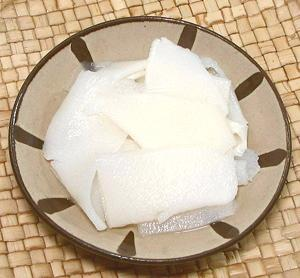 [Pickled Bamboo Shoots; Naw Mai Dong (Thai); Menma (Japan)]
In Southeast Asia, Korea, and parts of China, salt fermented bamboo
shoots are quite popular for use as a flavoring ingredient in soups
and other recipes. The photo specimens, from Thailand, were shaved
about 0.080 inch thick (2 mm), in random size and shape, from a fairly
large bamboo shoot. A 32 ounce jar will have about 6-7/8 ounces of
bamboo shoot after draining and wringing out. This is about 1 cup lightly
packed. A 32 ounce jar (mostly water) was purchased from a large Asian
market in Los Angeles (San Gabriel) for 2017 US $2.39. Ing: bamboo shoot,
water, salt, citric acid, sodium benzoate, sodium metabisulfite.
Bamboo Leaves
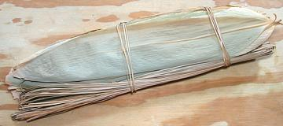 Dried Bamboo Leaves are sold in bundles for use as food wrappers. They need substantial soaking to soften them before use. The photo examples were 18 inches long by 3-1/4 inches wide. They were bundled with an equal number of bamboo leaf stems for use in tying the wrappers, as the bundle itself was tied. These were purchased from a large Asian market in Los Angeles (San Gabriel).
Health & Nutrition
Do not attempt to eat unprocessed bamboo shoots until they have been peeled of their leafy sheath and simmered for sufficient time to drive off their toxic cyanide. They are unlikely to kill you, but they could make you uncomfortable. Commercially prepared products have already been detoxed, and are usually labeled "poached" or "boiled".
Bamboo shoots have almost no fat, and are low in calories and sugar, but have a fair amount of protein and are high in fiber. They have significant amounts of vitamin A, vitamin B6, vitamin E, thiamin, riboflavin, niacin, folate and pantothenic acid. They also include minerals calcium, magnesium, phosphorous, potassium, sodium, zinc, copper, manganese, selenium and iron.